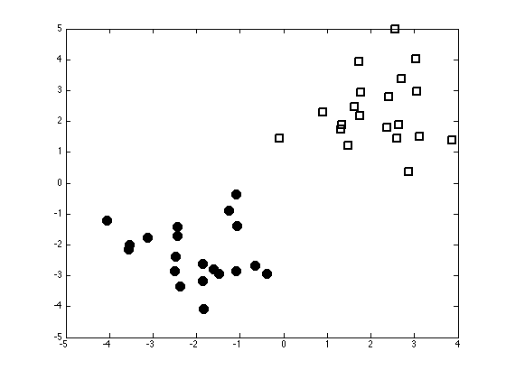

Contents
logmap.m
From A First Course in Machine Learning, Chapter 4. Simon Rogers, 01/11/11 [simon.rogers@glasgow.ac.uk] Finding the MAP parameter value using logistic regression
clear all;close all;
Load the classification data
load ../data/logregdata % Plot the data figure(1);hold off plot(X(1:20,1),X(1:20,2),'ko','markersize',10,'markerfacecolor','k') hold on plot(X(21:40,1),X(21:40,2),'ks','markersize',10,'linewidth',2)
Initisliase the parameters
w = repmat(0,2,1); % Start at zero tol = 1e-6; % Stopping tolerance Nits = 100; w_all = zeros(Nits,2); % Store evolution of w values ss = 10; % Prior variance on the parameters of w change = inf; it = 0; while change>tol & it<=100 prob_t = 1./(1+exp(-X*w)); % Gradient grad = -(1/ss)*w' + sum(X.*(repmat(t,1,length(w))-repmat(prob_t,1,length(w))),1); % Hessian H = -X'*diag(prob_t.*(1-prob_t))*X; H = H - (1/ss)*eye(length(w)); % Update w w = w - inv(H)*grad'; it = it + 1; w_all(it,:) = w'; if it>1 change = sum((w_all(it,:) - w_all(it-1,:)).^2); end end w_all(it+1:end,:) = [];
Plot the evolution of w
figure(1);hold off plot(w_all); xlabel('Iterations'); ylabel('w');

Plot the probability contours
figure(1);hold off plot(X(1:20,1),X(1:20,2),'ko','markersize',10,'markerfacecolor','k') hold on plot(X(21:40,1),X(21:40,2),'ks','markersize',10,'linewidth',2) [Xv,Yv] = meshgrid(-5:0.1:5,-5:0.1:5); Probs = 1./(1+exp(-(w(1).*Xv + w(2).*Yv))); [cs,h] = contour(Xv,Yv,Probs); clabel(cs,h); fprintf('\nProbabilities are probabilities of belonging to the square class');
Probabilities are probabilities of belonging to the square class